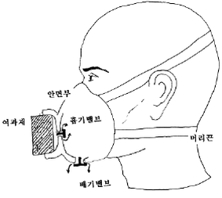
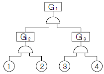
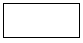
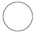
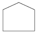
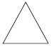
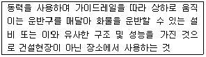
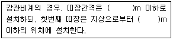
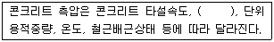

산업안전산업기사 (2014-05-25 기출문제)
1과목: 산업안전관리론
1. 다음 중 일반적인 안전관리 조직의 기본 유형으로 볼 수없는 것은?
- line system
- staff system
- safety system
- line-staff system
(정답률: 88%)

2. 다음 중 적성배치시 작업자의 특성과 가장 관계가 적은 것은?
- 연령
- 작업조건
- 태도
- 업무경력
(정답률: 59%)
3. 다음 중 안전 태도 교육의 원칙으로 적절하지 않은 것은?
- 적성 배치를 한다.
- 이해하고 납득한다.
- 항상 모범을 보인다.
- 지적과 처벌 위주로 한다.
(정답률: 93%)
4. 연평균 1000명의 근로자를 채용하고 있는 사업장에서 연간 24명의 재해자가 발생하였다면 이 사업장의 연천인율은 얼마인가? (단, 근로자는 1일 8시간씩 연간 300일을 근무한다.)
- 10
- 12
- 24
- 48
(정답률: 63%)
5. 다음 중 산업재해로 인한 재해손실비 산정에 있어 하인리히의 평가방식에서 직접비에 해당하지 않는 것은?
- 통신급여
- 유족급여
- 간병급여
- 직업재활급여
(정답률: 84%)
6. 다음 중 산업안전보건법령상 안전⋅보건표지의 용도 및 사용 장소에 대한 표지의 분류가 가장 올바른 것은?
- 폭발성 물질이 있는 장소 : 안내표지
- 비상구가 좌측에 있음을 알려야 하는 장소 : 지시표지
- 보안경을 착용해야만 작업 또는 출입을 할 수 있는 장소 : 안내표지
- 정리⋅정돈 상태의 물체나 움직여서는 안 될 물체를 보존하기 위하여 필요한 장소 : 금지표지
(정답률: 72%)
7. 하인리히의 재해발생 5단계 이론 중 재해 국소화 대책은 어느 단계에 대비한 대책인가?
- 제1단계 → 제2단계
- 제2단계 → 제3단계
- 제3단계 → 제4단계
- 제4단계 → 제5단계
(정답률: 56%)
8. 다음 중 [그림]에 나타난 보호구의 명칭으로 옳은 것은?

- 격리식 반면형 방독마스크
- 직결식 반면형 방진마스크
- 격리식 전면형 방독마스크
- 안면부여과식 방진마스크
(정답률: 60%)
9. 다음 중 매슬로우의 욕구위계 5단계 이론을 올바르게 나열한 것은?
- 생리적 욕구 (→) 사회적 욕구 (→) 안전의 욕구 (→) 존경의 욕구 (→) 자아실현의 욕구
- 안전의 욕구 (→) 생리적 욕구 (→) 사회적 욕구 (→) 존경의 욕구 (→) 자아실현의 욕구
- 생리적 욕구 (→) 안전의 욕구 (→) 사회적 욕구 (→) 존경의 욕구 (→) 자아실현의 욕구
- 사회적 욕구 (→) 생리적 욕구 (→) 안전의 욕구 (→) 자아실현의 욕구 (→) 존경의 욕구
(정답률: 85%)
10. 안전교육의 방법 중 TWI(Training Within Industry for supervisor)의 교육내용에 해당하지 않는 것은?
- 작업지도기법(JIT)
- 작업개선기법(JMT)
- 작업환경 개선기법(JET)
- 인간관계 관리기법(JRT)
(정답률: 63%)
11. 작업장에서 매일 작업자가 작업 전, 중, 후에 시설과 작업동작 등에 대하여 실시하는 안전점검의 종류를 무엇이라 하는가?
- 정기점검
- 일상점검
- 임시점검
- 특별점검
(정답률: 87%)
12. 다음 중 재해조사시 유의사항으로 가장 적절하지 않은 것은?
- 가급적 재해 현장이 변형되지 않은 상태에서 실시한다.
- 목격자가 제시한 사실 이외의 추측되는 말은 정밀 분석한다.
- 과거 사고 발생 경향 등을 참고하여 조사한다.
- 객관적 입장에서 재해방지에 우선을 두고 조사한다.
(정답률: 85%)
13. 산업안전보건법령상 사업 내 안전⋅보건교육에 있어 “채용 시의 교육 및 작업내용 변경 시의 교육 내용”에 해당 하지 않는 것은? (단, 산업안전보건법 및 일반관리에 관한 사항은 제외한다.)
- 물질안전보건자료에 관한 사항
- 사고 발생시 긴급조치에 관한 사항
- 작업 개시 전 점검에 관한 사항
- 표준안전작업방법 및 지도 요령에 관한 사항
(정답률: 50%)
14. 적응기제(Adjustment Mechanism) 중 방어적 기제(Defence Mechanism)에 해당하는 것은?
- 고립(Isolation)
- 퇴행(Regression)
- 억압(Suppression)
- 합리화(Rationalization)
(정답률: 86%)
15. 다음 중 사고의 위험이 불안전한 행위 외에 불안전한 상태에서도 적용된다는 것과 가장 관계가 있는 것은?
- 이념성
- 개인차
- 부주의
- 지능성
(정답률: 85%)
16. 다음 중 기억과 망각에 관한 내용으로 틀린 것은?
- 학습된 내용은 학습 직후의 망각률이 가장 낮다.
- 의미없는 내용은 의미있는 내용보다 빨리 망각한다.
- 사고력을 요하는 내용이 단순한 지식보다 기억, 파지의 효과가 높다.
- 연습은 학습한 직후에 시키는 것이 효과가 있다.
(정답률: 68%)
17. 다음 중 안전교육의 4단계를 올바르게 나열한 것은?
- 도입 → 확인 → 제시 → 적용
- 도입 → 제시 → 적용 → 확인
- 확인 → 제시 → 도입 → 적용
- 제시 → 확인 → 도입 → 적용
(정답률: 71%)
18. 다음 중 무재해운동에서 실시하는 위험예지훈련에 관한 설명으로 틀린 것은?
- 근로자 자신이 모르는 작업에 대한 것도 파악하기 위하여 참가집단의 대상범위를 가능한 넓혀 많은 인원이 참가토록 한다.
- 직장의 팀워크로 안전을 전원이 빨리 올바르게 선취하는 훈련이다.
- 아무리 좋은 기법이라도 시간이 많이 소요되는 것은 현장에서 큰 효과가 없다.
- 정해진 내용의 교육보다는 전원의 대화방식으로 진행 한다.
(정답률: 61%)
19. 재해예방의 4원칙 중 대책선정의 원칙에서 관리적 대책에 해당되지 않는 것은?
- 안전교육 및 훈련
- 동기부여와 사기 향상
- 각종 규정 및 수칙의 준수
- 경영자 및 관리자의 솔선수범
(정답률: 44%)
20. 다음 중 리더가 가지고 있는 세력의 유형이 아닌 것은?
- 전문세력(expert power)
- 보상세력(reward power)
- 위임세력(entrust power)
- 합법세력(legitimate power)
(정답률: 72%)
2과목: 인간공학 및 시스템안전공학
21. 인간 오류의 분류에 있어 원인에 의한 분류 중 작업의 조건이나 작업의 형태 중에서 다른 문제가 생겨 그 때문에 필요한 사항을 실행할 수 없는 오류(error)를 무엇이라 하는가?
- secondary error
- primary error
- command error
- commission error
(정답률: 56%)
22. 일반적으로 스트레스로 인한 신체반응의 척도 가운데 정신적 작업의 스트레인 척도와 가장 거리가 먼 것은?
- 뇌전도
- 부정맥지수
- 근전도
- 심박수의 변화
(정답률: 67%)
23. 다음 중 인간공학에 관련된 설명으로 옳지 않은 것은?
- 인간의 특성과 한계점을 고려하여 제품을 변경한다.
- 생산성을 높이기 위해 인간의 특성을 작업에 맞추는 것이다.
- 사고를 방지하고 안전성과 능률성을 높일 수 있다.
- 편리성, 쾌적성, 효율성을 높일 수 있다.
(정답률: 72%)
24. 다음과 같이 ①~④의 기본사상을 가진 FT도에서 minimal cut set 으로 옳은 것은?

- {①, ②, ③, ④}
- {①, ③, ④}
- {①, ②}
- {③, ④}
(정답률: 80%)
25. 다음 중 조도의 단위에 해당하는 것은?
- fL
- diopter
- lumen/m2
- lumen
(정답률: 57%)
26. 다음 중 불대수(Boolean algebra)의 관계식으로 옳은 것은?
- A(AㆍB) = B
- A + B = AㆍB
- A + AㆍB = AㆍB
- (A + B)(A + C) = A + BㆍC
(정답률: 76%)
27. 2개 공정의 소음수준 측정 결과 1공정은 100dB에서 2시간, 2공정은 90dB에서 1시간 소요될 때 총 소음량(TND)과 소음설계의 적합성을 올바르게 나열한 것은? (단, 우리나라는 90dB에 8시간 노출될 때를 허용기준으로 하며, 5dB 증가할 때 허용시간은 1/2로 감소되는 법칙을 적용한다.)
- TND = 0.83, 적합
- TND = 0.93, 적합
- TND = 1.03, 적합
- TND = 1.13, 부적합
(정답률: 38%)
28. 다음 중 시스템 안전의 최종분석 단계에서 위험을 고려하는 결정인자가 아닌 것은?
- 효율성
- 피해가능성
- 비용산정
- 시스템의 고장모드
(정답률: 40%)
29. 시스템이 저장되고 이동되고, 실행됨에 따라 발생하는 작동시스템의 기능이나 과업, 활동으로부터 발생되는 위험에 초점을 맞추어 진행하는 위험분석방법은?
- FHA
- OHA
- PHA
- SHA
(정답률: 55%)
30. 다음 중 인체계측에 관한 설명으로 틀린 것은?
- 의자, 피복과 같이 신체모양과 치수와 관련성이 높은 설비의 설계에 중요하게 반영된다.
- 일반적으로 몸의 측정 치수는 구조적 치수(structural dimension)와 기능적 치수(functional dimension)로 나눌 수 있다.
- 인체계측치의 활용시에는 문화적 차이를 고려하여야 한다.
- 인체계측치를 활용한 설계는 인간의 안락에는 영향을 미치지만 성능수행과는 관련성이 없다.
(정답률: 69%)
31. 품질 검사 작업자가 한 로트에서 검사 오류를 범할 확률이 0.1이고, 이 작업자가 하루에 5개의 로트를 검사한다면, 5개 로트에서 에러를 범하지 않을 확률은?
- 90%
- 75%
- 59%
- 40%
(정답률: 49%)
32. 다음 중 얼음과 드라이아이스 등을 취급하는 작업에 대한 대책으로 적절하지 않은 것은?
- 더운 물과 더운 음식을 섭취한다.
- 가능한 한 식염을 많이 섭취한다.
- 혈액순환을 위해 틈틈이 운동을 한다.
- 오랫동안 한 장소에 고정하여 작업하지 않는다.
(정답률: 77%)
33. 다음 중 망막의 원추세포가 가장 낮은 민감성을 보이는 파장의 색은?
- 적색
- 회색
- 청색
- 녹색
(정답률: 67%)
34. 다음 중 작업방법의 개선원칙(ECRS)에 해당되지 않는 것은?
- 교육(Education)
- 결합(Combine)
- 재배치(Rearrange)
- 단순화(Simplify)
(정답률: 48%)
35. 다음 중 시스템 안전성 평가 기법에 관한 설명으로 틀린 것은?
- 가능성을 정량적으로 다룰 수 있다.
- 시각적 표현에 의해 정보전달이 용이하다.
- 원인, 결과 및 모든 사상들의 관계가 명확해진다.
- 연역적 추리를 통해 결함사상을 빠짐없이 도출하나, 귀납적 추리로는 불가능하다.
(정답률: 76%)
36. 다음 중 시스템의 수명곡선(욕조곡선)에서 우발고장 기간에 발생하는 고장의 원인으로 볼 수 없는 것은?
- 사용자의 과오 때문에
- 안전계수가 낮기 때문에
- 부적절한 설치나 시동 때문에
- 최선의 검사방법으로도 탐지되지 않는 결함 때문에
(정답률: 47%)
37. 정보를 전송하기 위한 표시장치 중 시각장치보다 청각 장치를 사용해야 더 좋은 경우는?
- 메시지가 나중에 재참조되는 경우
- 직무상 수신자가 자주 움직이는 경우
- 메시지가 공간적인 위치를 다루는 경우
- 수신자가 청각계통이 과부하상태인 경우
(정답률: 75%)
38. FT도에 사용되는 기호 중 “시스템의 정상적인 가동상태에서 일어날 것이 기대되는 사상”을 나타내는 것은?




(정답률: 49%)
39. 다음 중 통제표시비(control/display ratio)를 설계할 때 고려하는 요소에 관한 설명으로 틀린 것은?
- 계기의 조절시간이 짧게 소요되도록 계기의 크기(size)는 항상 작게 설계한다.
- 짧은 주행 시간 내에 공차의 인정범위를 초과하지 않는 계기를 마련한다.
- 목시거리(目示距離)가 길면 길수록 조절의 정확도는 떨어진다.
- 통제표시비가 낮다는 것은 민감한 장치라는 것을 의미한다.
(정답률: 75%)
40. 인간공학의 중요한 연구과제인 계면(interface)설계에 있어서 다음 중 계면에 해당되지 않는 것은?
- 작업공간
- 표시장치
- 조종장치
- 조명시설
(정답률: 64%)
3과목: 기계위험방지기술
41. 다음 중 선반 작업시 준수하여야 하는 안전 사항으로 틀린 것은?
- 작업 중 장갑 착용을 금한다.
- 작업 시 공구는 항상 정리해 둔다.
- 운전 중에 백기어(back gear)를 사용한다.
- 주유 및 청소를 할 때에는 반드시 기계를 정지 시키고 한다.
(정답률: 84%)
42. 산업안전보건법령에 따라 다음 중 목재가공용으로 사용되는 모떼기기계의 방호장치는? (단, 자동이송장치를 부착한 것은 제외한다.)
- 분할날
- 날접촉예방장치
- 급정지장치
- 이탈방지장치
(정답률: 66%)
43. 다음 중 컨베이어(conveyor)에 반드시 부착해야 되는 방호장치로 가장 적당한 것은?
- 해지장치
- 권과방지장치
- 과부하방지장치
- 비상정지장치
(정답률: 72%)
44. 다음 중 정하중이 작용할 때 기계의 안전을 위해 일반적으로 안전율이 가장 크게 요구되는 재질은?
- 벽돌
- 주철
- 구리
- 목재
(정답률: 52%)
45. 다음 중 프레스에 사용되는 광전자식 방호장치의 일반 구조에 관한 설명으로 틀린 것은?
- 방호장치의 감지기능은 규정한 검출영역 전체에 걸쳐 유효하여야 한다.
- 슬라이드 하강 중 정전 또는 방호장치의 이상 시에는 1회 동작 후 정지할 수 있는 구조이어야 한다.
- 정상동작표시램프는 녹색, 위험표시램프는 붉은색으로 하며, 쉽게 근로자가 볼 수 있는 곳에 설치해야 한다.
- 방호장치의 정상작동 중에 감지가 이루어지거나 공급 전원이 중단되는 경우 적어도 두 개 이상의 출력신호 개폐장치가 꺼진 상태로 돼야 한다.
(정답률: 75%)
46. 다음 중 120SPM 이상의 소형 확동식 클러치 프레스에 가장 적합한 방호장치는?
- 양수조작식
- 수인식
- 손쳐내기식
- 초음파식
(정답률: 49%)
47. 롤러기 조작부의 설치 위치에 따른 급정지장치의 종류에서 손조작식 급정지장치의 설치 위치로 옳은 것은?
- 밑면에서 0.5m 이내
- 밑면에서 0.6m 이상 1.0m 이내
- 밑면에서 1.8m 이내
- 밑면에서 1.0m 이상 2.0m 이내
(정답률: 78%)
48. 다음 중 탁상용 연삭기에 사용하는 것으로서 공작물을 연삭할 때 가공물 지지점이 되도록 받쳐주는 것은 무엇이라 하는가?
- 주판
- 측판
- 삼압대
- 워크레스트
(정답률: 62%)
49. 다음 중 작업장 내의 안전을 확보하기 위한 행위로 볼 수 없는 것은?
- 통로의 주요 부분에는 통로표시를 하였다.
- 통로에는 50럭스 정도의 조명시설을 하였다.
- 비상구의 너비는 1.0m로 하고, 높이는 2.0m로 하였다.
- 통로면으로부터 높이 2m 이내에는 장애물이 없도록 하였다.
(정답률: 83%)
50. 산업안전보건법령에 따라 아세틸렌-산소 용접기의 아세틸렌 발생기실에 설치해야 할 배기통은 얼마 이상의 단면적을 가져야 하는가?
- 바닥면적의 1/16
- 바닥면적의 1/20
- 바닥면적의 1/24
- 바닥면적의 1/30
(정답률: 70%)
51. 설비에 사용되는 재질의 최대사용하중이 100kg 이고, 파단하중이 300kg 이라면 안전율은 얼마인가?
- 0.3
- 1
- 3
- 100
(정답률: 80%)
52. 다음 중 기계를 정지 상태에서 점검하여야 할 사항으로 틀린 것은?
- 급유 상태
- 이상음과 진동상태
- 볼트⋅너트의 풀림 상태
- 전동기 개폐기의 이상 유무
(정답률: 75%)
53. 다음 중 취급운반의 5원칙으로 틀린 것은?
- 연속 운반으로 할 것
- 직선 운반으로 할 것
- 운반 작업을 집중화시킬 것
- 생산을 최소로 하는 운반을 생각할 것
(정답률: 81%)
54. 연삭기에서 숫돌의 바깥지름이 180mm라면, 플랜지의 바깥지름은 몇 mm 이상이어야 하는가?
- 30
- 36
- 45
- 60
(정답률: 80%)
55. 크레인 작업시 로프에 1톤의 중량을 걸어, 20m/s2의 가속도로 감아올릴 때 로프에 걸리는 총하중(kgf)은 약 얼마인가?
- 1040.34
- 2040.53
- 3040.82
- 3540.91
(정답률: 53%)
56. 아세틸렌 용접장치를 사용하여 금속의 용접⋅용단 또는 가열작업을 하는 경우 게이지 압력으로 얼마를 초과하는 압력의 아세틸렌을 발생시켜 사용해서는 아니 되는가?
- 85kPa
- 107kPa
- 127kPa
- 150kPa
(정답률: 67%)
57. 페일 세이프(Fail safe) 구조의 기능면에서 설비 및 기계 장치의 일부가 고장이 난 경우 기능의 저하를 가져 오더라도 전체 기능은 정지하지 않고 다음 정기 점검시까지 운전이 가능한 방법은?
- Fail-passive
- Fail-soft
- Fail-active
- Fail-operational
(정답률: 55%)
58. 산업안전보건법령에 따른 다음 설명에 해당하는 기계설비는?

- 크레인
- 일반작업용 리프트
- 곤돌라
- 이삿짐운반용 리프트
(정답률: 55%)
59. 다음 중 셰이퍼(shaper)의 크기를 표시하는 것은?
- 램의 행정
- 새들의 크기
- 테이블의 면적
- 바이트의 최대 크기
(정답률: 60%)
60. 다음 중 산업용 로봇의 재해 발생에 대한 주된 원인이며, 본체의 외부에 조립되어 인간의 팔에 해당되는 기능을 하는 것은?
- 배관
- 외부전선
- 제동장치
- 매니퓰레이터
(정답률: 83%)
4과목: 전기 및 화학설비위험방지기술
61. 다음은 정전기로 인한 재해를 방지하기 위한 조치중 전기를 통하지 않는 부도체 물질에 적합하지 않는 조치는?
- 가습을 시킨다.
- 접지를 실시한다.
- 도전성을 부여한다.
- 자기방전식 제전기를 설치한다.
(정답률: 46%)
62. 충전전로의 선간전압이 121kV 초과 145kV 이하의 활선 작업시 충전전로에 대한 접근한계거리는?
- 30cm
- 150cm
- 170cm
- 230cm
(정답률: 71%)
63. 다음 중 방폭구조의 종류에 해당하지 않는 것은?
- 유출 방폭구조
- 안전증 방폭구조
- 압력 방폭구조
- 본질안전 방폭구조
(정답률: 74%)
64. 전압과 인체저항과의 관계를 잘못 설명한 것은?
- 정(+)의 저항온도계수를 나타낸다.
- 내부조직의 저항은 전압에 관계없이 일정하다.
- 1000V 부근에서 피부의 전기저항은 거의 사라진다.
- 남자보다 여자가 일반적으로 전기저항이 작다.
(정답률: 45%)
65. 다음 중 누전차단기의 설치 환경조건에 관한 설명으로 틀린 것은?
- 전원전압은 정격전압의 85~110% 범위로 한다.
- 설치장소가 직사광선을 받을 경우 차폐시설을 설치한다.
- 정격부동작 전류가 정격감도 전류의 30% 이상이어야하고 이들의 차가 가능한 큰 것이 좋다.
- 정격전부하전류가 30A인 이동형 전기기계⋅기구에 접속되어 있는 경우 일반적으로 정격감도전류는 30mA 이하인 것을 사용한다.
(정답률: 72%)
66. 접지공사의 종류에 대한 접지선의 굵기 기준이 바르게 연결된 것은?
- 제1종 접지공사 - 공칭단면적 16mm2 이상
- 제2종 접지공사 - 공칭단면적 6mm2 이상
- 제3종 접지공사 - 공칭단면적 4mm2 이상
- 특별 제3종 접지공사 - 공칭단면적 2.5mm2 이상
(정답률: 60%)
67. 정전기가 컴퓨터에 미치는 문제점으로 가장 거리가 먼 것은?
- 디스크 드라이브가 데이터를 읽고 기록한다.
- 메모리 변경이 에러나 프로그램의 분실을 발생시킨다.
- 프린터가 오작동을 하여 너무 많이 찍히거나, 글자가 겹쳐서 찍힌다.
- 터미널에서 컴퓨터에 잘못된 데이터를 입력시키거나 데이터를 분실한다.
(정답률: 75%)
68. 작업장에서 근로자의 감전 위험을 방지하기 위하여 필요한 조치를 하여야 한다. 맞지 않는 것은?
- 작업장 통행 등으로 인하여 접촉하거나 접촉할 우려가 있는 배선 또는 이동전선에 대하여는 절연피복이 손상 되거나 노화된 경우에는 교체하여 사용하는 것이 바람직하다.
- 전선을 서로 접속하는 때에는 해당 전선의 절연성능 이상으로 절연될 수 있는 것으로 충분히 피복하거나 적합한 접속기구를 사용하여야 한다.
- 물 등 도전성이 높은 액체가 있는 습윤한 장소에서 근로자의 통행 등으로 인하여 접촉할 우려가 있는 이동 전선 및 이에 부속하는 접속기구는 그 도전성이 높은 액체에 대하여 충분한 절연효과가 있는 것을 사용하여야 한다.
- 차량 기타 물체의 통과 등으로 인하여 전선의 절연피복이 손상될 우려가 없더라도 통로바닥에 전선 또는 이동전선을 설치하여 사용하여서는 아니 된다.
(정답률: 64%)
69. 전기설비의 접지저항을 감소시킬 수 있는 방법으로 가장 거리가 먼 것은?
- 접지극을 깊이 묻는다.
- 접지극을 병렬로 접속한다.
- 접지극의 길이를 길게 한다.
- 접지극과 대지간의 접촉을 좋게 하기 위해서 모래를 사용한다.
(정답률: 54%)
70. 다음 중 최대공급전류가 200A인 단상전로의 한 선에서 누전되는 최소전류는 몇 A 인가?
- 0.1
- 0.2
- 0.5
- 1.0
(정답률: 34%)
71. 다음 중 소화(消火)방법에 있어 제거소화에 해당되지 않는 것은?
- 연료 탱크를 냉각하여 가연성 기체의 발생 속도를 작게 한다.
- 금속화재의 경우 불활성 물질로 가연물을 덮어 미연소 부분과 분리한다.
- 가연성 기체의 분출 화재시 주밸브를 잠그고 연료 공급을 중단시킨다.
- 가연성 가스나 산소의 농도를 조절하여 혼합 기체의 농도를 연소 범위 밖으로 벗어나게 한다.
(정답률: 46%)
72. 산업안전보건법에 따라 사업주는 공정안전보고서의 심사결과를 송부 받은 경우 몇 년간 보존하여야 하는가?
- 1년
- 2년
- 3년
- 5년
(정답률: 61%)
73. 환풍기가 고장난 장소에서 인화성 액체를 취급하는 과정에서 부주의로 마개를 막지 않았다. 이 장소에서 작업자가 담배를 피우기 위해 불을 켜는 순간 인화성 액체에서 불꽃이 일어나는 사고가 발생하였다면 다음 중 이와 같은 사고의 발생 가능성이 가장 높은 물질은?
- 아세트산
- 등유
- 에틸에테르
- 경유
(정답률: 70%)
74. 다음 중 자연발화에 대한 설명으로 가장 적절한 것은?
- 습도를 높게 하면 자연발화를 방지할 수 있다.
- 점화원을 잘 관리하면 자연발화를 방지할 수 있다.
- 윤활유를 닦은 걸레의 보관 용기로는 금속재보다는 플라스틱 제품이 더 좋다.
- 자연발화는 외부로 방출하는 열보다 내부에서 발생하는 열의 양이 많은 경우에 발생한다.
(정답률: 57%)
75. 다음 중 폭발이나 화재 방지를 위하여 물과의 접촉을 방지하여야 하는 물질에 해당하는 것은?
- 칼륨
- 트리니트로톨루엔
- 황린
- 니트로셀룰로오스
(정답률: 77%)
76. 부피조성이 메탄 65%, 에탄 20%, 프로판 15% 인 혼합가스의 공기 중 폭발하한계는 약 몇 vol% 인가? (단, 메탄, 에탄, 프로판의 폭발하한계는 각각 5.0vol%, 3.0vol%, 2.1vol% 이다.)
- 63
- 3.73
- 4.83
- 5.93
(정답률: 69%)
77. SO2 , 20ppm은 약 몇 g/m3 인가 ? (단 , SO2 의 분자량은 64이고, 온도는 21℃, 입력은 1기압으로 한다.)
- 0.571
- 0.531
- 0.⑤71
- 0.⑤31
(정답률: 37%)
78. 다음 중 화염일주한계와 폭발등급에 대한 설명으로 틀린 것은?
- 수소와 메탄은 상호 다른 등급에 해당한다.
- 폭발등급은 화염일주한계에 따라 등급을 구분한다.
- 폭발등급 1등급 가스는 폭발등급 3등급 가스보다 폭발점화 파급위험이 크다.
- 폭발성 혼합가스에서 화염일주한계값이 작은 가스 일수록 외부로 폭발점화 파급위험이 커진다.
(정답률: 50%)
79. 다음 중 화염의 역화를 방지하기 위한 안전장치는?
- flame arrester
- flame stack
- molecular seal
- water seal
(정답률: 58%)
80. 다음 중 증류탑의 일상 점검항목으로 볼 수 없는 것은?
- 도장의 상태
- 트레이(Tray)의 부식상태
- 보온재, 보냉재의 파손여부
- 접속부, 맨홀부 및 용접부에서의 외부 누출유무
(정답률: 56%)
5과목: 건설안전기술
81. 흙막이 가시설 공사 중 발생할 수 있는 히빙(heaving) 현상에 관한 설명으로 틀린 것은?
- 흙막이 벽체 내⋅외의 토사의 중량차에 의해 발생한다.
- 연약한 점토지반에서 굴착면의 융기로 발생한다.
- 연약한 사질토 지반에서 주로 발생한다.
- 흙막이벽의 근입장 깊이가 부족할 경우 발생한다.
(정답률: 58%)
82. 굴착기계 중 주행기면 보다 하방의 굴착에 적합하지 않은 것은?
- 백호우
- 클램쉘
- 파워셔블
- 드래그라인
(정답률: 58%)
83. 다음 빈칸에 알맞은 숫자를 순서대로 옳게 나타낸 것은?(2022년 02월 27일 확인한 규정 적용됨)

- 2, 2.5
- 2.5, 3
- 2, 2
- 1, 3
(정답률: 62%)
84. 크레인을 사용하여 양중작업을 하는 때에 안전한 작업을 위해 준수하여야 할 내용으로 틀린 것은?
- 인양할 하물(荷物)을 바닥에서 끌어당기거나 밀어 정위치 작업을 할 것
- 가스통 등 운반 도중에 떨어져 폭발 가능성이 있는 위험물용기는 보관함에 담아 매달아 운반할 것
- 인양 중인 하물이 작업자의 머리 위로 통과하지 않도록 할 것
- 인양할 하물이 보이지 아니하는 경우에는 어떠한 동작도 하지 아니할 것
(정답률: 78%)
85. 다음 ( )안에 들어갈 말로 옳은 것은?

- 타설높이
- 골재의 형상
- 콘크리트 강도
- 박리제
(정답률: 74%)
86. 주행크레인 및 선회크레인과 건설물 사이에 통로를 설치하는 경우, 그 폭은 최소 얼마 이상으로 하여야 하는가? (단, 건설물의 기둥에 접촉하지 않는 부분인 경우)
- 0.3m
- 0.4m
- 0.5m
- 0.6m
(정답률: 41%)
87. 철골공사에서 나타나는 용접결함의 종류에 해당하지 않는 것은?
- 오버랩(overlap)
- 언더 컷(under cut)
- 블로우 홀(blow hole)
- 가우징(gouging)
(정답률: 70%)
88. 와이어로프나 철선 등을 이용하여 상부지점에서 작업용 발판을 매다는 형식의 비계로서 건물 외장도장이나 청소 등의 작업에서 사용되는 비계는?
- 브라켓 비계
- 달비계
- 이동식 비계
- 말비계
(정답률: 73%)
89. 건설공사 시 계측관리의 목적이 아닌 것은?
- 지역의 특수성보다는 토질의 일반적인 특성파악을 목적으로 한다.
- 시공 중 위험에 대한 정보제공을 목적으로 한다.
- 설계 시 예측치와 시공 시 측정치와의 비교를 목적으로 한다.
- 향후 거동 파악 및 대책 수립을 목적으로 한다.
(정답률: 53%)
90. 유해⋅위험방지계획서 검토자의 자격 요건에 해당되지 않는 것은?
- 건설안전분야 산업안전지도사
- 건설안전기사로서 실무경력 3년인 자
- 건설안전산업기사 이상으로서 실무경력 7년인 자
- 건설안전기술사
(정답률: 67%)
91. 차량계 하역운반기계에서 화물을 싣거나 내리는 작업에서 작업지휘자가 준수해야할 사항과 가장 거리가 먼 것은?
- 작업순서 및 그 순서마다의 작업방법을 정하고 작업을 지휘하는 일
- 기구 및 공구를 점검하고 불량품을 제거하는 일
- 당해 작업을 행하는 장소에 관계근로자외의 자의 출입을 금지하는 일
- 총 화물량을 산출하는 일
(정답률: 63%)
92. 흙의 동상을 방지하기 위한 대책으로 틀린 것은?
- 물의 유통을 원활하게 하여 지하수위를 상승시킨다.
- 모관수의 상승을 차단하기 위하여 지하수위 상층에 조립토층을 설치한다.
- 지표의 흙을 화학약품으로 처리한다.
- 흙속에 단열재료를 매입한다.
(정답률: 65%)
93. 타워크레인을 벽체에 지지하는 경우 서면심사 서류 등이 없거나 명확하지 아니할 때 설치를 위해서는 특정 기술자의 확인을 필요로 하는데, 그 기술자에 해당하지 않는 것은?
- 건설안전기술사
- 기계안전기술사
- 건축시공기술사
- 건설안전분야 산업안전지도사
(정답률: 59%)
94. 안전난간의 구조 및 설치요건과 관련하여 발끝막이판의 바닥으로부터 설치높이 기준으로 옳은 것은?
- 10cm 이상
- 15cm 이상
- 20cm 이상
- 30cm 이상
(정답률: 59%)
95. 콘크리트 타설시 거푸집의 측압에 영향을 미치는 인자들에 대한 설명으로 틀린 것은?
- 슬럼프가 클수록 측압이 크다.
- 거푸집의 강성이 클수록 측압이 크다.
- 철근량이 많을수록 측압이 작다.
- 타설 속도가 느릴수록 측압이 크다.
(정답률: 72%)
96. 항타기⋅항발기의 권상용 와이어로프로 사용 가능한 것은?
- 이음매가 있는 것
- 와이어로프의 한 꼬임에서 끊어진 소선의 수가 5% 인 것
- 지름의 감소가 호칭지름의 8% 인 것
- 심하게 변형된 것
(정답률: 60%)
97. 산업안전보건기준에 관한 규칙에 따른 토사붕괴를 예방하기 위한 굴착면의 기울기 기준으로 틀린 것은?(2021년 11월 19일 변경된 규정 적용됨)
- 습지 1:1 ~ 1:1.5
- 건지 1:0.5 ~ 1:1
- 풍화암 1:0.8
- 경암 1:0.5
(정답률: 71%)
98. 철근가공작업에서 가스절단을 할 때의 유의사항으로 틀린 것은
- 가스절단 작업 시 호스는 겹치거나 구부러지거나 밟히지 않도록 한다.
- 호스. 전선 등은 작업효율을 위하여 다른 작업장을 거치는 곡선상의 배선이어야 한다.
- 작업장에서 가연성 물질에 인접하여 용접작업할 때에는 소화기를 비치하여야 한다.
- 가스절단 작업 중에는 보호구를 착용하여야 한다.
(정답률: 84%)
99. 사다리식 통로의 설치기준으로 틀린 것은?(오류 신고가 접수된 문제입니다. 반드시 정답과 해설을 확인하시기 바랍니다.)
- 폭은 30cm 이상으로 할 것
- 발판과 벽과의 사이는 15cm 이상의 간격을 유지할 것
- 사다리의 상단은 걸쳐놓은 지점으로부터 60cm 이상 올라가도록 할 것
- 사다리식 통로의 길이가 10m 이상인 경우에는 7m 이내마다 계단참을 설치할 것
(정답률: 63%)
100. 추락방지망의 달기로프를 지지점에 부착할 때 지지점의 간격이 1.5m인 경우 지지점의 강도는 최소 얼마 이상이어야 하는가? (단, 연속적인 구조물이 방망지지점인 경우임)
- 200kg
- 300kg
- 400kg
- 500kg
(정답률: 64%)